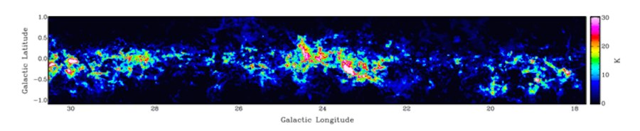

Integrated Intensity Map of the 13CO J=1-0 transition from GRS
The Galactic Ring Survey maps the 13CO J=1-0 transition in the first Galactic quadrant (18° <= l <= 55.7° and -1° <= b <= +1°). It has an angular resolution of 46” and a velocity resolution of 0.21 km/s, with almost 2 million spectra. Its main science goal is understanding the kinematics, structure, and astrochemistry of the 5 kpc ring.
Jackson et al. 2006: 10.1086/500091